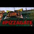

<html>
 <head>
  <title>
   Infowars interview with investigator - Pizza Gate Takes Over Social Media
  </title>
  <meta content="Post on /v/Pizzagate archived on 2016-11-25 by Nearchos." name="description"/>
  <meta content="Infowars interview with investigator - Pizza Gate Takes Over Social Media" property="og:title"/>
  <meta content="Post on /v/Pizzagate archived on 2016-11-25 by Nearchos." property="og:description"/>
  <link href="../../page.css" rel="stylesheet"/>
  <meta content="https://voat.pizzagate.hackliberty.org/thumbnails/da/87/da876314-c9cc-46e7-be6f-21d10f16a23b.jpg" property="og:image"/>
  <meta content="https://voat.pizzagate.hackliberty.org/v/pizzagate/1434978.html" property="og:url"/>
 </head>
</html>
<body class="dark">
 <div id="container">
  <!-- array (
  'submissionid' => 1434978,
  'creationDate' => '2016-11-25 10:19:22',
  'domain' => 'youtube.com',
  'formattedContent' => NULL,
  'isAdult' => 0,
  'isAnonymized' => 0,
  'subverse' => 'pizzagate',
  'thumbnail' => 'da876314-c9cc-46e7-be6f-21d10f16a23b.jpg',
  'title' => 'Infowars interview with investigator - Pizza Gate Takes Over Social Media',
  'url' => 'https://www.youtube.com/watch?v=f_zTaruGkHs',
  'userName' => 'Nearchos',
  'archivedLink' => NULL,
  'archivedDomain' => NULL,
  'isDeleted' => 0,
) -->
  <div style="text-align:center; font-size:24px; font-weight:bold;">
   Voat /v/Pizzagate Archive
  </div>
  <div class="content" role="main">
   <div class="sitetable linklisting" id="siteTable">
    <div class="submission id-1434978 link type-text" id="submission-1434978">
     <a name="submissionTop">
     </a>
     <p class="parent">
     </p>
     <a class="thumbnail may-blank" href="https://www.youtube.com/watch?v=f_zTaruGkHs" target="_self">
      
     </a>
     <div class="entry unvoted">
      <p class="title">
       <a class="title may-blank" href="https://www.youtube.com/watch?v=f_zTaruGkHs" tabindex="1" target="_self" title="Infowars interview with investigator - Pizza Gate Takes Over Social Media">
        Infowars interview with investigator - Pizza Gate Takes Over Social Media
       </a>
       <span class="domain">
        (
        <a href="https://archive.searchvoat.co/search.php?d=youtube.com">
         youtube.com
        </a>
        )
       </span>
      </p>
      <p class="tagline">
       submitted
       <time datetime="2016-11-25T10:19:22+00:00" title="11/25/2016 10:19:22 AM">2016-11-25T10:19:22</time> by
       <span class="userattrs">
        <a class="author may-blank" href="https://archive.searchvoat.co/search.php?u=Nearchos">
         Nearchos
        </a>
       </span>
      </p>
      <ul class="flat-list buttons">
       <li class="first">
        <a class="comments may-blank" href="https://archive.searchvoat.co/v/pizzagate/1434978" rel="nofollow">
         No comments
        </a>
       </li>
      </ul>
     </div>
     <div class="child">
     </div>
     <div class="clearleft">
     </div>
    </div>
    <div class="clearleft">
    </div>
   </div>
   <div class="horizontal-line">
   </div>
   <div class="commentarea">
    <div class="sitetable nestedlisting" id="siteTable">
    </div>
   </div>
  </div>
 </div>
 <div class="footer-container">
 </div>
</body>
